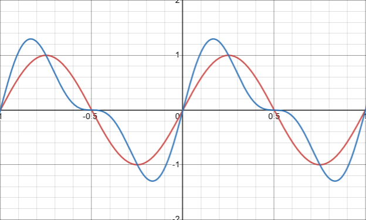

Thatol Archive
Fourier Transform
Let's say that you have a signal, let's say it's a song.
Let's say that you want to know what notes are playing at a specific point in the song.
Maybe you're making sheet music of that song or something.
Let's take the signal:
This is a combination of a strong 1Hz sine wave, and a weak 2Hz sine wave.
But what if we didn't know that this equation was a combination of those two signals?
Well, there is a way to extract those frequencies; Using the Fourier transform.
The first thing you might notice is that the if you draw a sine wave on top of that equation, it somewhat alligns quite nicely.

This is a good indicator that the frequency of the sine wave we drew is likely in the signal.
But we need a way to numerically represent the simalarity instead of using our eyes.
We can do this by multiplying the signal with the sine wave, then finding the area under the resulting curve.
Since the result of this can be divergent, we will have to choose a starting and ending point. Let's use -10 to 10.
The higher the resulting number is, the more that frequency is present in the signal.
For our original signal, the one with the strong 1Hz and weak 2Hz frequencies:
According to these results:
Our signal contains a strong 1Hz frequency,
Our signal contains a weak 2Hz frequency,
And our signal does not contain a 3Hz frequency. (At least not a significant one.)
Just as we expected!
However, there are two issues with our equations.
Issue 1:
This equation works with this signal just fine, but what if instead of f(x) being a combination of sine waves, it was a combination of cosine waves?
All of a sudden, the graph is shifted, and now our equation no longer works.
Sure, we can compare our new signal with a cosine wave instead of a sine wave, and now it will work. However, when given a random signal, it will likely not be shifted the same amount as a sine or cosine wave.
We need to take this shifting into account.
To do this, we compare the signal with both sine and cosine waves.
Then, we turn these two results into a complex number, then get its magnatude.
Where "q" represents the frequency chosen to compare.
And remember that:
This gives us the true intensity of the given frequency.
But there is still one more issue.
Issue 2:
In practice, when given a random signal to analyze, you're probably not going to be given the equation of that signal.
Imaging taking the integral of f(x) when you don't even know what f(x) is?
Usually when we manage signals, especially on an electronic device, we treat it as a finite series of amplitudes.
Since it's finite, we call it a "Discrete" Fourier transform.
When doing this, sampling a longer signal will make your results more accurate. (The reason why we had to put a bound on our integral earlier is because with an infinite duration, every output other than 0 will stretch out to plus or minus infinity.)
Also, the more points you store from the signal, the higher the maximum frequency your results can output.
Now, when we are using a finite signal rather than a finite one, we do this:
Where:
t1 is which sample you want to start at in the signal.
t2 is which sample you want to end at in the signal.
S is the set of all samples in the signal.
q is the frequency being tested.
Remember, all of this math is to test one frequency.
To get a graph of all frequencies, you need to solve this equation when q = 0, then when q = 1, and keep on going until q equals the amount of samples in your signal.
Fast Fourier transform
TODO.